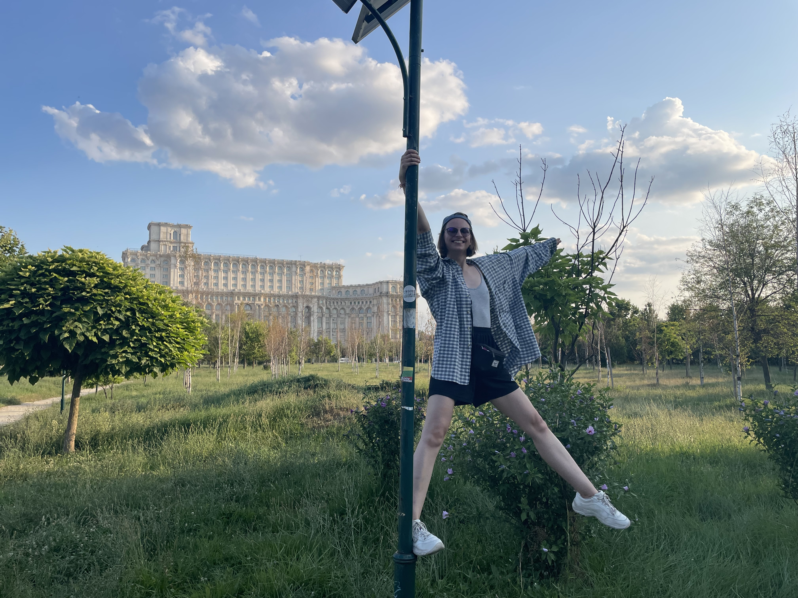

Labas!
Trumpai apie mane
- Vardas: Kristina
- Amžius: 26
- Gimtadienis: liepos 24d.
- Baigiau Vilniaus Žvėryno gimnaziją
- Baigiau LSMU farmacijos studijas
- MPharm
fun facts
- Baigiau muzikos mokyklą (specialybė - fortepijonas) - neprisėdau grot nuo baigimo
- Iki pandemijos mokiausi pole dance
- Pandemijos metu atradau riedučių slalomą
- Šiuo metu mokausi burti taro kortom
- Gyvenime planuoju parašyt bent jau 2 knygas
- Hobių turiu per daug, o paroje laiko man per mažai